Italian Food
Welcome to my slice of gastronomic joy! Here, I'll be sharing my favorite Italian food, from hearty dishes to delectable treats. Join me on a flavorful exploration through the tastes of Italy!

Welcome to my slice of gastronomic joy! Here, I'll be sharing my favorite Italian food, from hearty dishes to delectable treats. Join me on a flavorful exploration through the tastes of Italy!